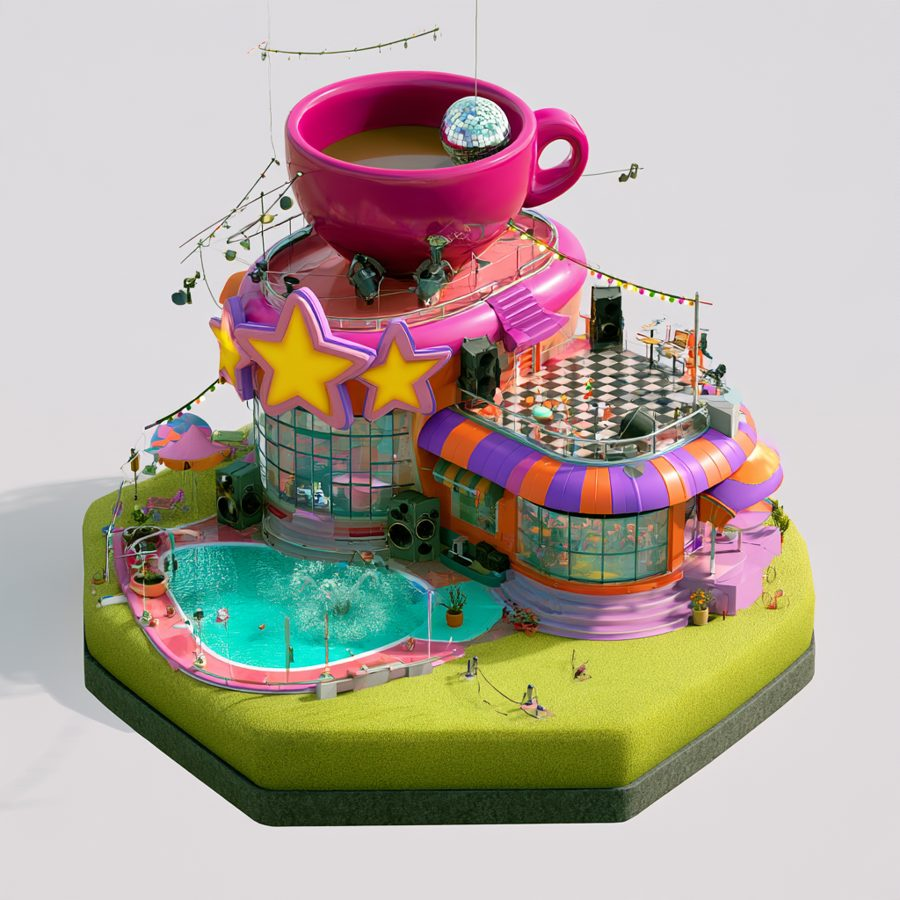
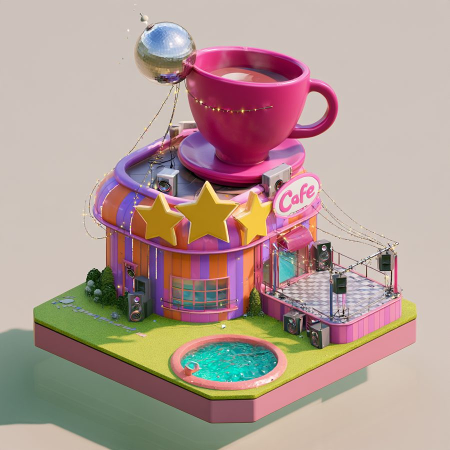
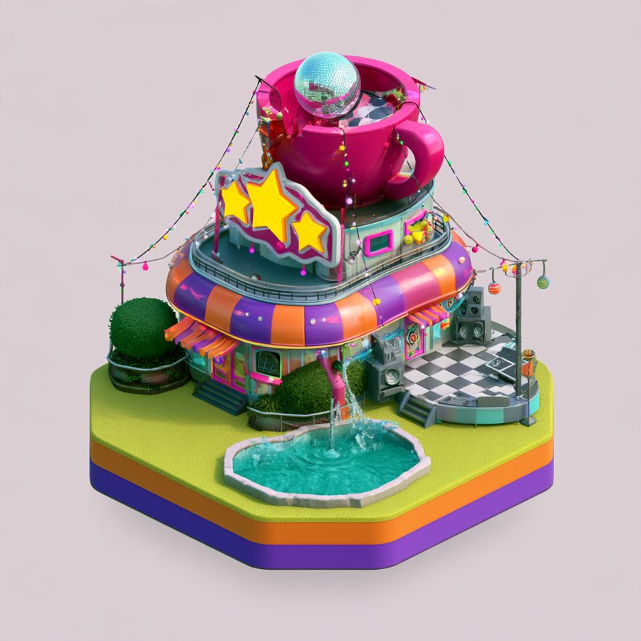
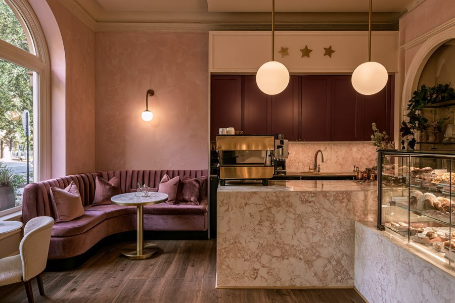
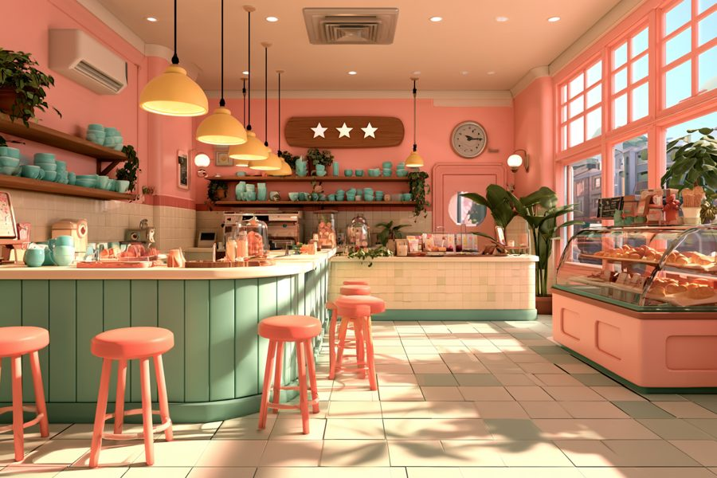

AW-STUDY-0013
The café

Four distances, one building


One continuous camera move from the map to the door, then the roof and front wall lift away. No cuts or fades.
The hex



Built as a true hex, the same size as the Ranch. Small faceted mini icons on the turf (a milkshake, a cup, a record, a speaker) show what the café has today.
The room
123
456
- 1Stage: the music
- 2Floor: the party
- 3Doors: arrivals
- 4Bar: Abbie makes
- 5Lounge: the wait
- 6Stars: the score
How it tells you
| What | How |
|---|---|
| Score | Stars on the painted sign, echoed by the neon stars inside |
| The rush | A queue out the door, the bell rings faster, the beanbags fill |
| The party | The floor, neon and disco balls brighten; people dance; the music lifts |
| What they want | A picture bubble over the customer |
| Running low | An empty jar on the shelf; the mini icon on the hex dims |
| Money | Grown-up workbench only |
Three styles


An option: café by day, party by night
Today: the manifest, the back bar and three styles


Play
| Layer | What it is |
|---|---|
| The day | Run the shop for the day: the crew opens up, customers come, party at dusk, close and count the stars. Do anything or nothing; the crew covers every job. |
| Espresso | A mechatronics puzzle: fix the machine's water, heat and pressure from real parts, then pull a golden shot |
| Smoothie | A timing game: drop, blend and top on the beat |
| Dance party | A memory game: follow my lead on the light-up floor, then take the lead |
| Decorating | Decoration cards played into the room; sets combo. Paint the walls with the stylus; an art auction sells her paintings |
| Unlocks | Looks only: skins, paint jobs, new decorations, whole-café reskins |
| The business | The café runs in your town simulation; you run it from the grown-up workbench |
Your call
Which style for the models: toy bricks, vinyl toy or low poly?